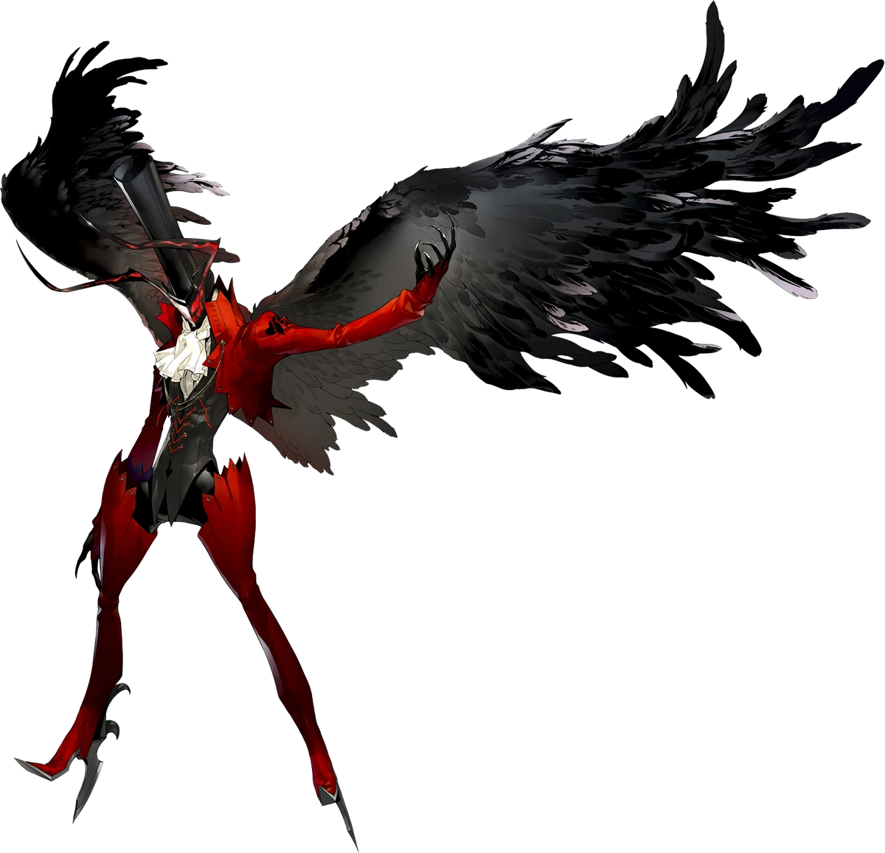
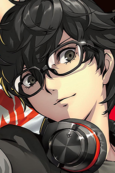

Introduction
Ren Amamiya is the protagonist of the Persona 5 series. He is a second-year transfer student at Shujin Academy, He is a transfer student to continue his acadmics because he is on probation for being falsely framed for assult. He soon joins company with many different Persona weilders and leads the Phantom Theives. who guide through the metaverse and acomplish missions.
Persona Unlocking
However during the start of the game he was going to school when he bumped into someone else who was attending the same school. He decided to walk with him to school. However, to their suprise the school had been replaced with a castle. They explored inside until some gaurds of the castel came in and found the both of them at the entrance. They were held captive in a cell, they later find out their gym teacher Kamoshida. Kamoshida was going to execute them. However, to defend the other person Ren unleashes his Persona Arsène
Gallery
Arsène

Joker(apperence in metaverse)
Ren Amamiya
Facts about Ren Amamiya
- Code Name: Joker
- DOB(date of birth): November 11, 1999
- Age: 17
- Height: 175 cm (5'6")
- Primary Tool: Daggers
- Secondary Tool: Handguns
- Arcana(personality): Fool, World
- Persona(asssistant): Arsène